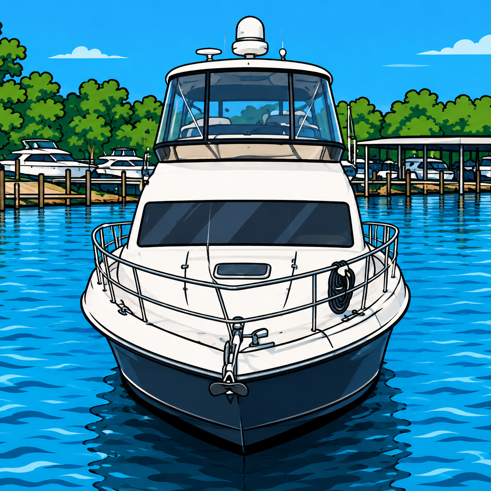

Your boat. Always ready. Wherever you are.
Service, parts, safety gear, fuel, trips and documents in one place, even with no signal.
Boat ReadinessReady
ServiceAll clear
SafetyAll clear
PartsAll stocked
DocsAll current

On your phone? Tap a button above. On a computer? Scan a code with your phone’s camera.
Everything is saved on your phone first and syncs when you’re back in range.
Service intervals by date or engine hours, with the engine hours tracked as readings.
Log trips and fuel, save marinas and anchorages, and find places near you.
Registration, insurance, manuals and photos, with expiry dates you won’t miss.

Whether you’re tied up at the dock or miles from the nearest tower, SlipMate keeps the details of your boat at your fingertips: engine hours, service due dates, the spare-parts list and the paperwork the marina asks for.
Service by engine hours and by the calendar, and what to log.
What to include, who should hold it, and how to close it out.
What to carry, and which items expire and when.
The small parts that end most days early, by engine type.